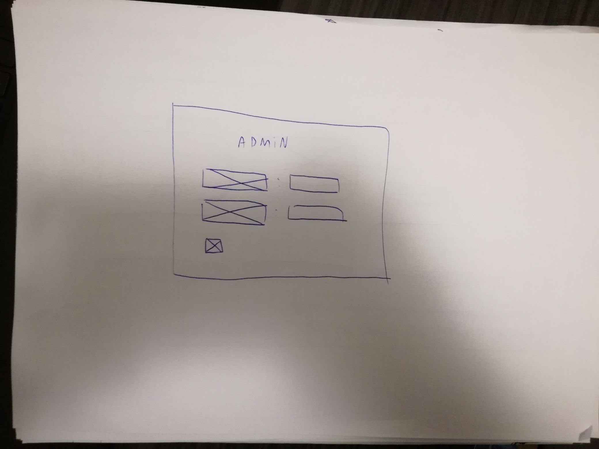
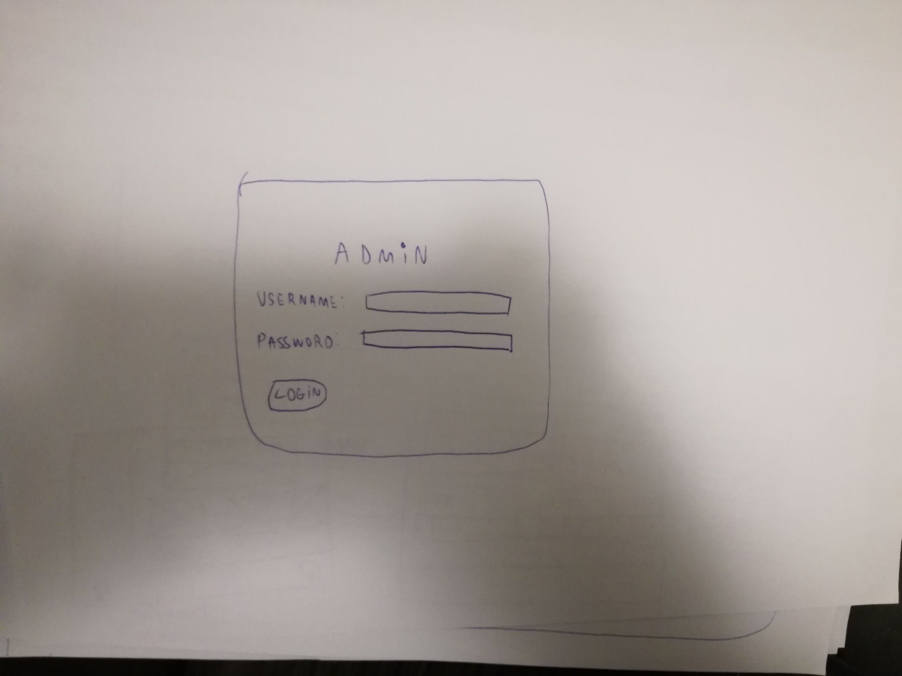
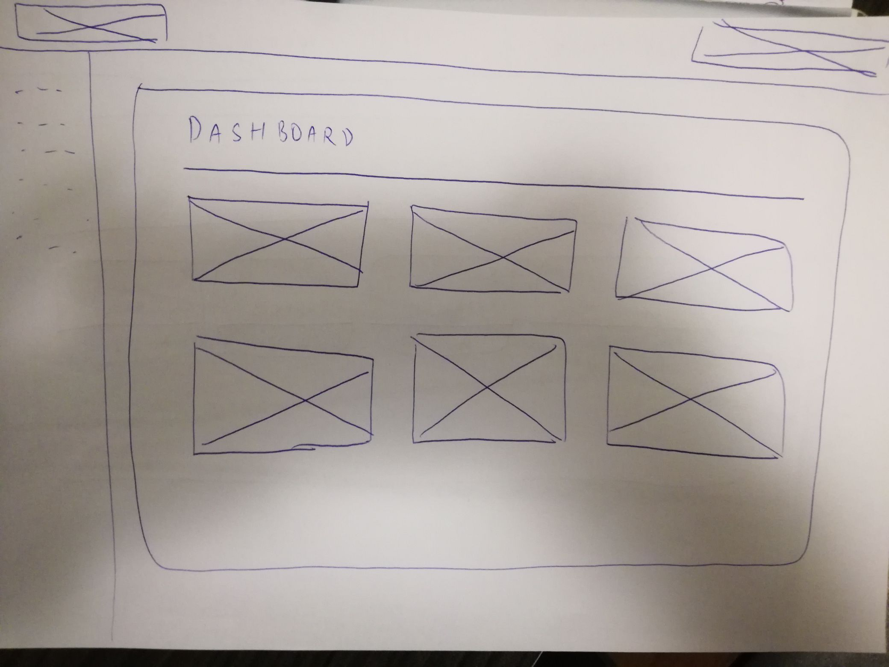
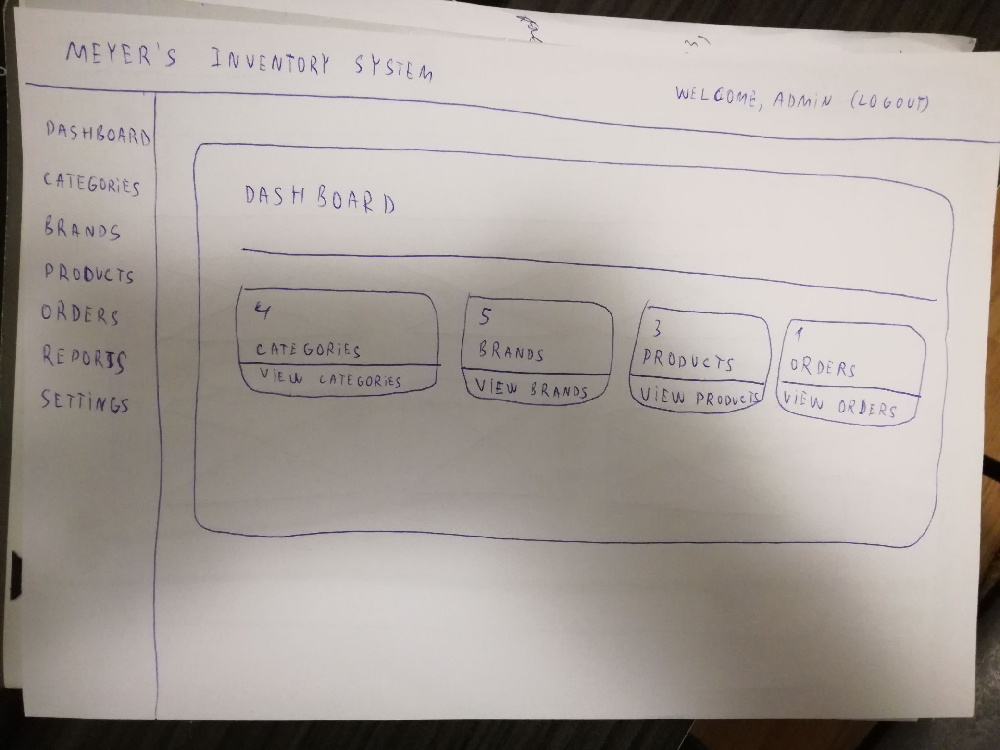
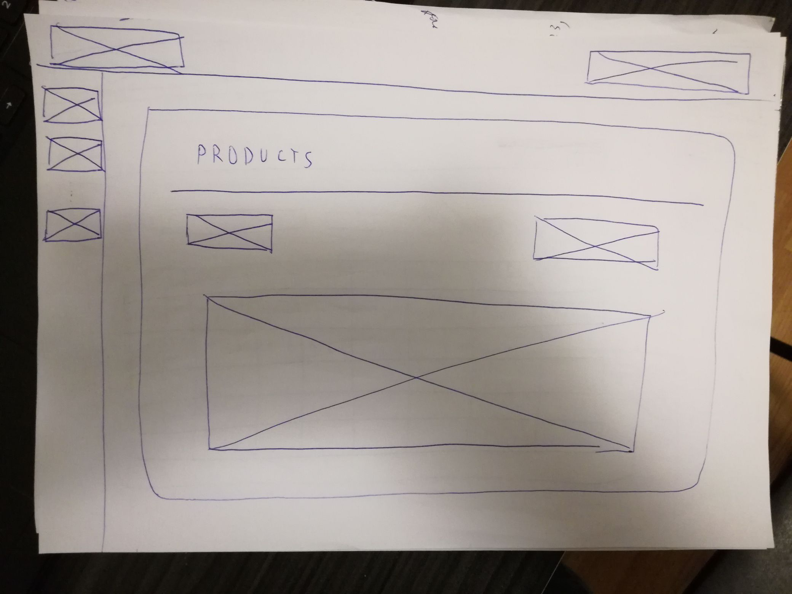
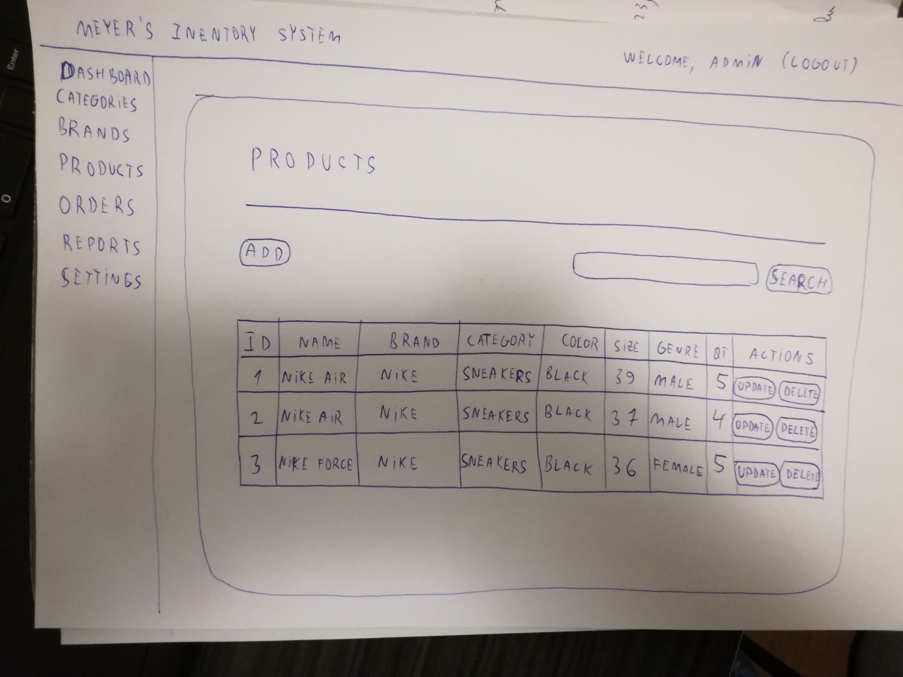
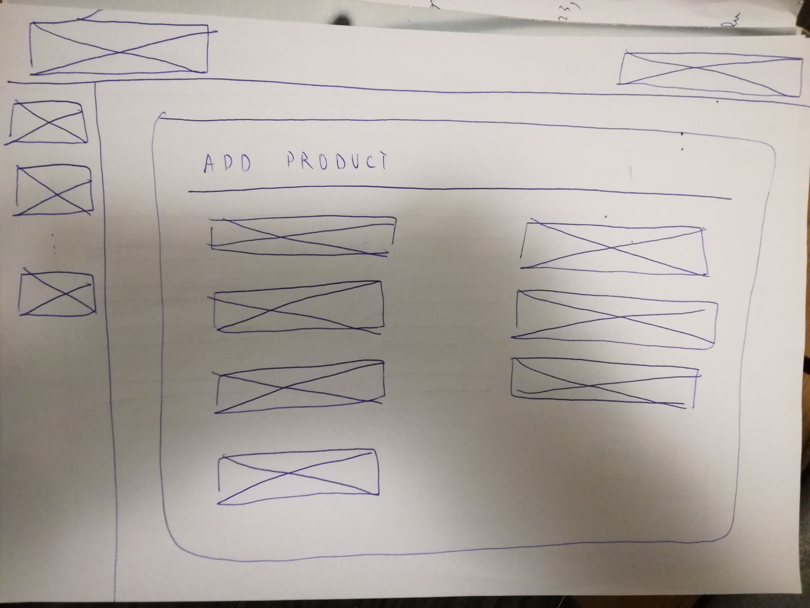
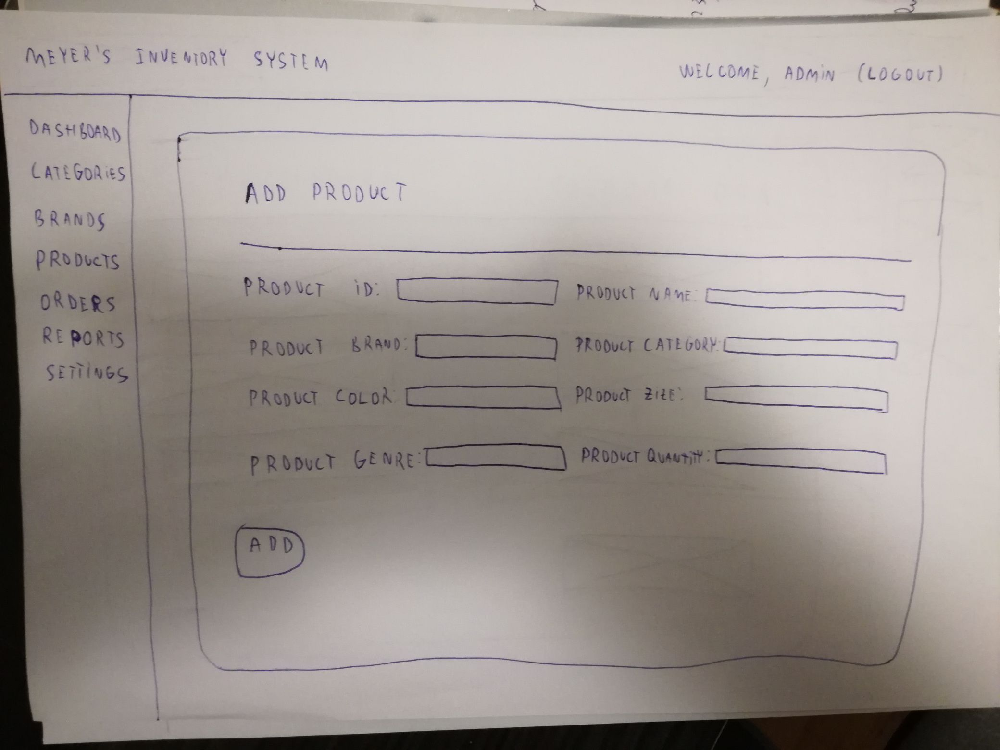
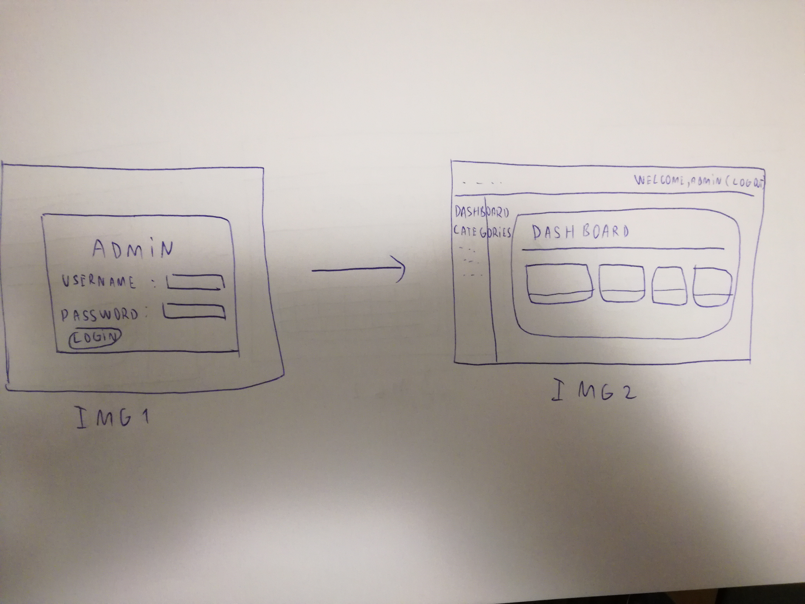
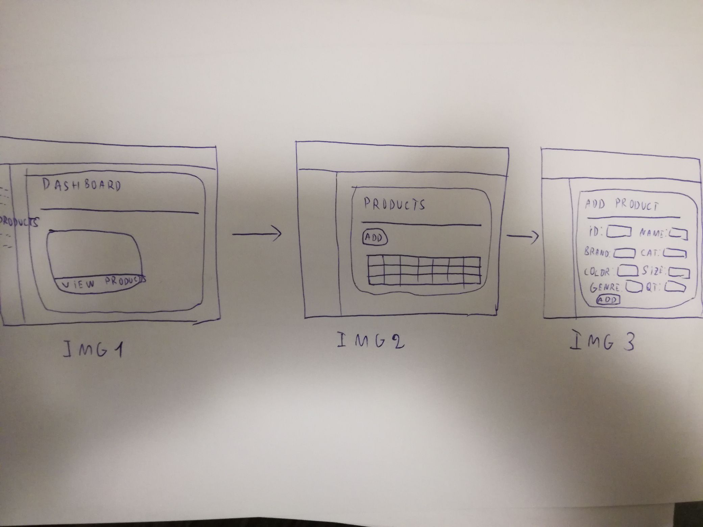

Minimum 3 ideas/concepts regarding the project design, including the sketches, wireframes, storyboards.
-
Login page

In the left photo we have the wireframe of login page. The right photo has 2 inputs (username, password) and the login button

-
Dashboard page
In the left photo we have the wireframe of dashboard page and in the right
we have the skatch.
The skatch has the title in the left of navigation bar and the welcome message,
the left-side navigation,
the presentation card that contains a title (Dashboard), some dashboard cards with the title of the corresponding page and the
number of table's rows.


-
Products page
The skatch of products page has a card that contains the title of page, a horrizontal bar,
add (row to products table) and search options, a table with data.


-
Add Product page


Storyboards
Here we can see that after the login button, the admin get the dashboard page (img1 to img2).

To get the Products page, in the dashboard we click products from the left-side navigation bar or "View products"
of the dashboard-card that has the "Products" title.

After we got in the products page, we click the add button to get to the "Add Product" page.

The 4 mandatory HTML5 persona documents, for various personas interacting to the system.
Person 1
Name:
Gordon Springer
Background
Date of birth: 10/11/1994
Gender: Male
Location: Iasi, Romania
Main Points:
"I have experience with many products but I didn't like them because are very complicated, too many details,
slows actions."
Main Points:
"I just want a product with fast actions, to be simple to use and with no bugs."
Frustrations and Pain Points
"This product is not fast as I have expected, the interface is simple but has too few details.
For me, there are some difficultes in adding products because when I click the add button from
products, always I get to the another page separated and I don't like that."
Person 2
Name:
Gavin Fisher
Background
Date of birth: 9/7/1995
Gender: Male
Location: Iasi, Romania
Main Points:
"I have experience with many products but I didn't like them because are not styled (buttons are not styled, few colors, etc
), many bugs, bad functionality."
Main Points:
"I just want a product with no bugs, good functionallity, to be simple in use, nice styled."
Frustrations and Pain Points
"I don't like that when I delete a row from any table, there is no warning message, a confirmation about deleting.
The dashboard has too few details."
Person 3
Name:
Diana Watson
Background
Date of birth: 7/10/1993
Gender: Female
Location: Iasi, Romania
Main Points:
"I have experience with many products but I didn't like them because are weird styled (weird colors, forms etc)
and I don't like to pay a project like these."
Main Points:
"I just want a product with nice style, I want to has warm colors and to be as simple as possible."
Frustrations and Pain Points
"I don't like the orders page because I don't think it's ok to be an update button to manage the order."
Person 4
Name:
Rebecca Carr
Background
Date of birth: 7/10/1993
Gender: Female
Location: Iasi, Romania
Main Points:
"I have experience with many products but I didn't like them because of the details and the functionality."
Main Points:
"I just want a product with nice style and no bugs."
Frustrations and Pain Points
"I don't like the login page, it's a mockery for me because doesn't have colors, only white,
some inputs, and a simple blue button that say you what will happen if you click it."